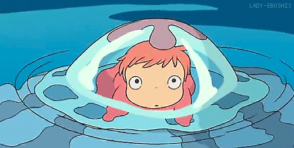
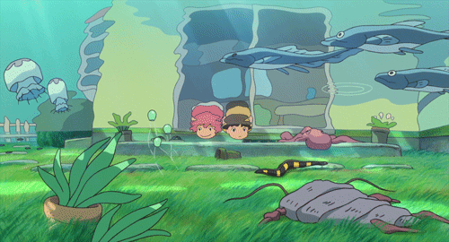
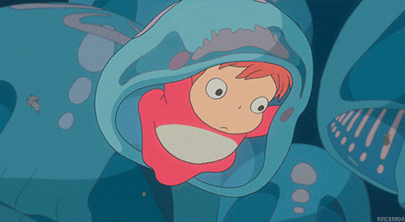
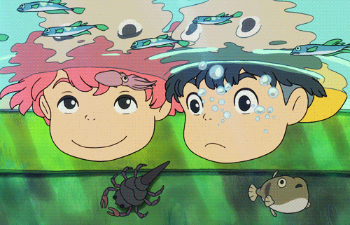
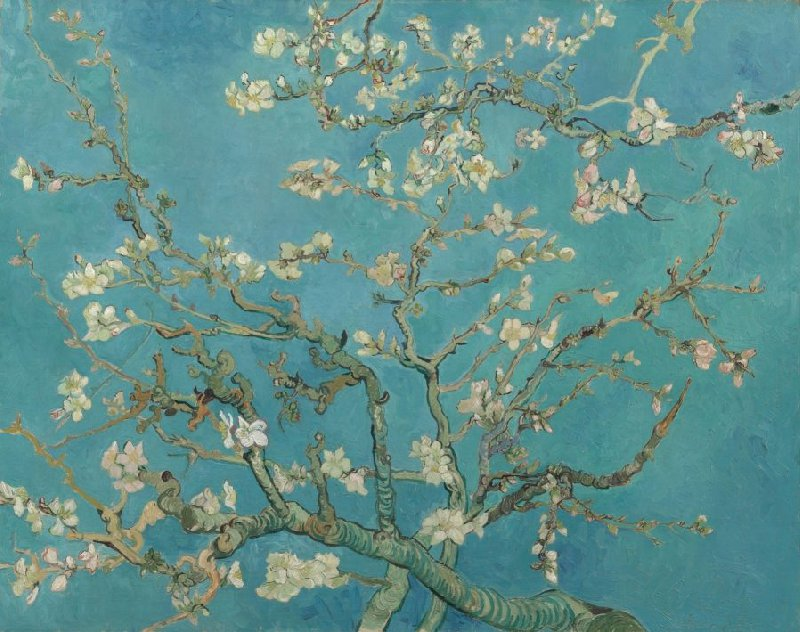
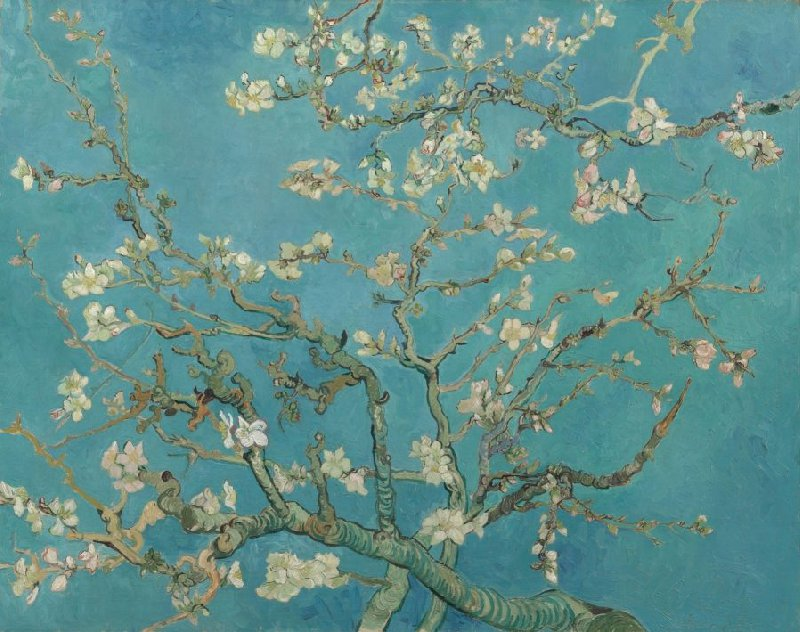
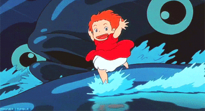
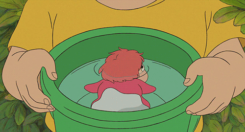
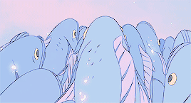

welcome to mari's goldfish mind, blurb blurb

why hello there

you're now tuning in to goldfishbowl 98fm, your favourite mix of internal screaming. let's dive right in:>

What’s your favorite color?
Evidently, the greens to the blues to the purples spectrum with a hint of yellows and orange, its hard to say so let me just show you:


What’s an artwork you like? (If it’s a time-based work, we won’t have time to watch it right now, but feel free to add it anyway!)
I'm a simple girl, Classic Monet and Van Gogh, cliche, but it's where it all started

take a peek at these bad boys


 


Something you’re super excited about (anything!)

- Getting a nice room setup - I'm moving in and I'm a huge interior decorating fan, production design habits, eveything needs to be just right, lots of thrifting, lots of scrolling through facebook market, lots of patience
- getting my furniture in
- reuniting with all the friends back in chicago
- becoming a new plant mom!
- *after doing this assignment, coding and making my new website!
- also eventually seeing my boyfriend again
.gif)
Something you’re NOT super excited about (anything!)
- unpacking, boooooo
- vacuuming carpet, double boo
- arranging medical check-ups, triple whammy boo
- stomach cramps for days, quadra boo?
- I need money to survive? penta bummer whammy booooooooooo

Something you recommend (anything! A book, an artist, a movie, show, video game, ice cream flavor, life philosophy, a keyboard (or a keyboard shortcut), a lifehack, literally anything)

- for all the coconut enthusiasts, coconut icecream superiority
- in fact, coconut milk > milk, try it wih your coffee or cooking, you might like it
- coffee with orange marmalade is goated
- GET ALL THE SUN BEFORE ITS GONE
- kombucha or kimchi for the gut health
- For good vibes: Nature TV - Only One, Jungle - Tash Sultana*gotta listen to the live bedroom recording*, Polyphia in general, FKJ too
- Oppenheimer is actually really good imo
- lego keyboard ftw
- if you havn't played Zelda breath of the wild/tears of the kingdom, you're missing out
- studio ghibli animations, watch em please
that's about it folks, thanks! buh byeeee
